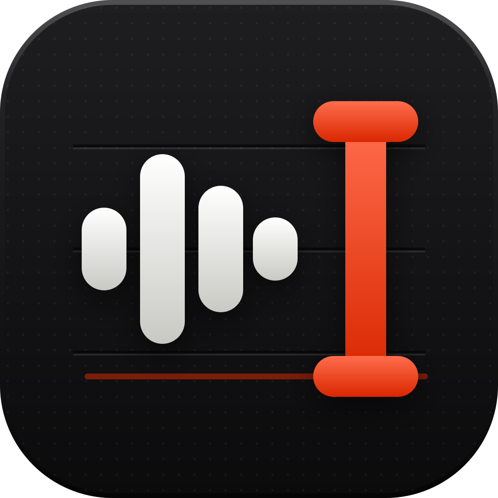
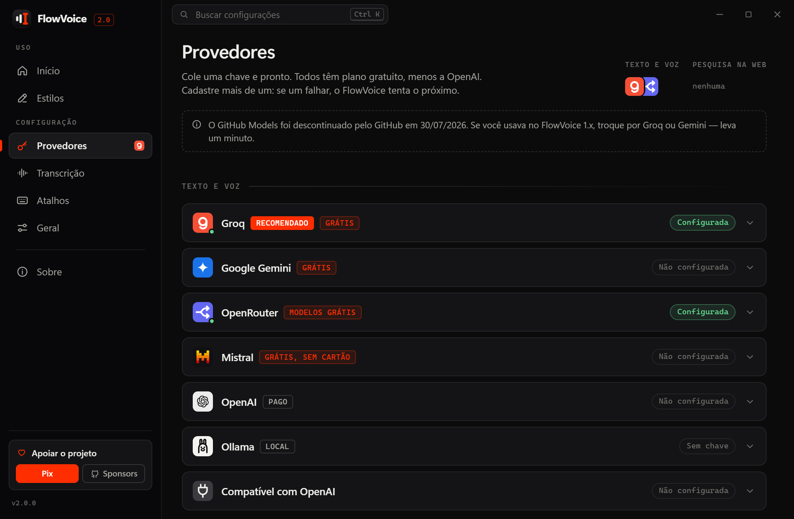

Fale. O texto aparece onde está o cursor.

FlowVoiceDitado por voz com IA, em qualquer app do Windows. Limpo, pontuado e no tom certo. Grátis, de código aberto e, se você quiser, 100% offline.
Você vê o texto enquanto fala.
- Ao vivo, sem voltar atrás
- Palavras ainda incertas aparecem mais claras e firmam quando duas respostas concordam. O que firmou não muda mais.
- Um clique para refazer
- No resultado, troque o estilo, traduza, cole ou copie. Se já colou, Substituir troca o texto no lugar.
- Vidro, novo na 2.1
- A cápsula pode ser de vidro, com o desfoque do próprio Windows, ou translúcida. Em Geral → Janela flutuante.
Uma fala. O tom certo para cada lugar.
Escolha o estilo, ou deixe o app em foco escolher por você.
Você falou no Outlook
“é, oi, pessoal, então, sobre o relatório do trimestre, né, eu preciso que cada um mande a sua parte até sexta, tipo, até o meio-dia, pra eu conseguir revisar tudo antes da reunião de segunda”
Olá, pessoal. Sobre o relatório trimestral: preciso que cada um envie a sua parte até sexta-feira, ao meio-dia, para que eu consiga revisar tudo antes da reunião de segunda-feira.
Formal e organizado, pronto para e-mail.
Estilo por app
O FlowVoice reconhece o app em foco, inclusive no navegador, e usa o estilo que você definiu para ele.
Gmail, WhatsApp Web, ChatGPT e outros também são reconhecidos dentro do Chrome e do Edge.
Selecione um texto. Diga o que mudar.
No modo Comando, Ctrl Alt K reescreve a seleção no próprio lugar, em qualquer app.
- Selecionado
oi ana, não vou conseguir ir na reunião amanhã não, deu um problema aqui, foi mal
- Você diz
“deixa mais formal”
- Fica assim
Oi, Ana. Infelizmente não poderei participar da reunião de amanhã por causa de um imprevisto. Peço desculpas.
Também vale “traduz pro inglês”, “resume em tópicos”, “corrige a gramática”.
Grátis de verdade. Até sem internet.
- Com uma chave grátis
- Groq (o recomendado), Gemini, Mistral ou OpenRouter. Sem cartão, em poucos minutos. Ver o guia das chaves
- Ou 100% no seu PC
- Modelos Whisper locais, inclusive um ajustado para o português do Brasil. Nada sai da máquina.
- Sem conta, sem servidor nosso
- As chaves ficam no cofre de credenciais do Windows. Código aberto, licença GPL-3.0. Privacidade

E os detalhes que fazem falta.
- Tradução enquanto ditaFale em português, cole em um de 34 idiomas. Ctrl Shift Y
- Vocabulário próprioNomes, marcas e termos técnicos sempre escritos do jeito certo.
- Histórico com buscaTudo o que você ditou fica salvo no seu PC.
- Segurar para falarGrava só enquanto o atalho estiver pressionado.
- Assistente por vozPergunte em voz alta, com busca na web. Ctrl Shift U
- Atualiza sozinhoInstalador de ~3 MB, sem pedir administrador.
Dúvidas rápidas
É grátis mesmo?
Sim. O FlowVoice não tem servidor: usa a sua chave direto no provedor, ou roda no seu PC. Os planos gratuitos do Groq e do Gemini dão conta de um uso diário normal, sem cartão.
O Windows mostrou um aviso ao instalar. É seguro?
É esperado: o instalador ainda não tem assinatura paga. Clique em “Mais informações” e “Executar assim mesmo”. O instalador é gerado pelo GitHub Actions a partir do código aberto.
Em quais sistemas funciona?
No Windows 10 e 11. O instalador tem cerca de 3 MB, não pede administrador e se atualiza sozinho.
Achei um problema ou tenho uma ideia. Onde falo?
No GitHub: reportar um problema ou sugerir uma melhoria. Dentro do app, em Configurações → Sobre, os mesmos botões já preenchem a versão do app e do Windows.
FlowVoice
Pare de digitar o que você pode falar.
Baixe, cole uma chave grátis do Groq e faça o primeiro ditado em cinco minutos.